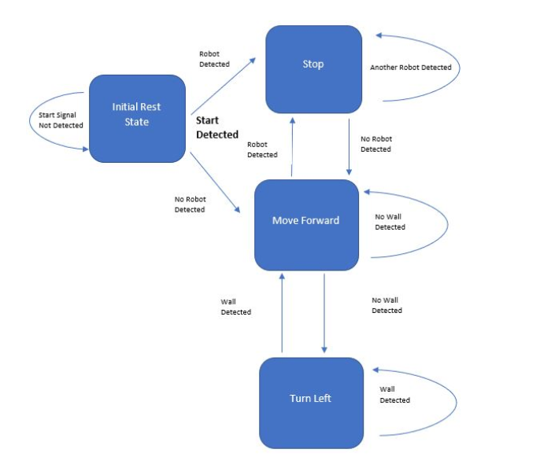

Lab 3: System Integration and Radio Communication
In this lab we integrated the systems from milestones 1 and 2. The robot will start at a 660Hz tone, autonomously navigate a small maze, and send the maze information from the sensors on the robot to a base station using radios. The base station will display the maze information
Radio Communication Team
Priya and Nathalia worked on the radio integration
Materials Used:- 2 Nordic nRF24L01+ tranceivers
- 2 Arduino Unos
- 2 radio breakout boards with headers
Getting Started:
We plugged the radios into the arduinos. Instead of using the 3.3V pin on the arduino, we connected the radio directly to a 3.3V Power Source. We then downloaded the RF24 Arduino Library. In this library there is a sketch called “Getting Started”. We replaced this sketch with the “Getting Started” sketch from the course GitHub repository for Lab 4.
#include <SPI.h> #include "nRF24L01.h" #include "RF24.h" #include "printf.h" // Radio pipe addresses for the 2 nodes to communicate. const uint64_t pipes[2] = { 0x0000000070LL, 0x0000000071LL };
In this sketch, we modified the identifier numbers for the two pipes to the ones assigned for our team. We calculated our pin numbers using 2(3D + N) + X. For our team, D = 3, N=26. Therefore, we got the numbers 2(3*3 + 26) + 0 = 70 and 2(3*3+26) + 1= 71.
We then tested the code to see if our 2 arduinos could communicate with each other properly. In the first part of the video below, we can see that we can switch which arduino is transmitting and which is receiving. After confirming that it worked, we also moved the arduinos further apart to make sure the communication would still work for a distance of ~10 feet.
Sending Maze Information:
First, we sent wireless information over the radio.
Then we designed a protocol for data sent between the robot and the base station. The following describes the representation of each bit and its translation:
Each message is 1-byte

Base Station-to-GUI Transmission:
Serial.println("reset"); delay(1000); Serial.println("0,0,west=true,south=true"); delay(1000); Serial.println("0,1,north=true,south=true"); delay(1000); Serial.println("0,2,north=true,east=true"); delay(1000); Serial.println("1,2,west=true,east=true"); delay(1000); Serial.println("1,1,north=true,south=true"); delay(1000); Serial.println("1,0,west=true,north=true"); delay(1000); Serial.println("2,0,south=true,west=true"); delay(1000); Serial.println("2,1,north=true"); delay(1000); Serial.println("2,2,south=true,east=true,north=true"); delay(5000);
Robot Systems Integration Team
Joyce and Vini worked on the radio integration
Materials Used:- Robot
- Decoy
- 660Hz tone generator
- walls
In this lab we integrated all the components from previous labs and milestones. This included: the start functionality (robot starts after 660Hz tone is played); IR sensing (stop if another robot which emits 6.08 kHz is in collision path, but ignore decoys which emit 18 kHz); line following (with self correction); wall detection (avoiding running into walls).
As seen in the diagram above, all conditions (presence of other robots, walls, and color of terrain) are checked continuously at the baud rate, except the start signal. The start signal is checked at the beginning of the main loop: if the signal is detected, the variable started (that was initialized to 0) is set to 1. The rest of the code is inside a the while loop with the condition started: while(started). This way the robot is unable to move or react until the 660Hz signal has played, but the signal only needs to play once.
Integration Overview:
We began by testing and tweaking each of the functionalities from previous labs. Afterwards we compiled the different circuits onto a single breadboard, one at a time, after each new addition the compiled subsystems were tested. As some of our subsystems are still not performing at an optimal level, we plan to further streamline and improve subsystems later on. The integrated code was streamlined through the use of functions. Seperate functions were created for reading the line sensors, moving forward, turning right and left, stopping, and detecting walls. The line following code was integrated into both the moving forward function (go_straight()), and the turning function (move(int direction)).
while(started){ if (fft_log_out[irBin] > irThresh) { //robot stops if another robot (IR hat) is sensed servos_stop(); } else { go_straight(); //robot default movement after starting: go straight if (wallDetected() == true){ //if a wall is detected, robot turns left (following left hand rule) move(left); if(wallDetected() == true){ //if another wall is detected, robot turns left (following left hand rule) move(left); } else go_straight; //if no wall or obstacle encountered, robot continues going straight } } }
In the main loop of the code, the code governing the robots movement through the maze is within a while loop with the condition that the 660Hz signal has played at least one; the first if condition in the while loop checks for the presence of another robot, and its corresponding else statement contains the code for the left hand wall following.
Work Distribution
The Lab 3 Work Distribution is as follows:
- Nathalia and Priya worked on the radio team
- Joyce and Vini worked on the systems integration team
The Lab 3 Report Work Distribution is as follows:
- Nathalia and Priya worked on the radio write up
- Joyce and Vini worked on the systems integration write up
- Vini wrote up the FSM
- Joyce and Priya filmed videos, Nathalia edited and uploaded videos
The website work distribution is as follows:
- Priya: Website Set Up
- Nathalia: Website Completion of Lab 3 and M aintenance